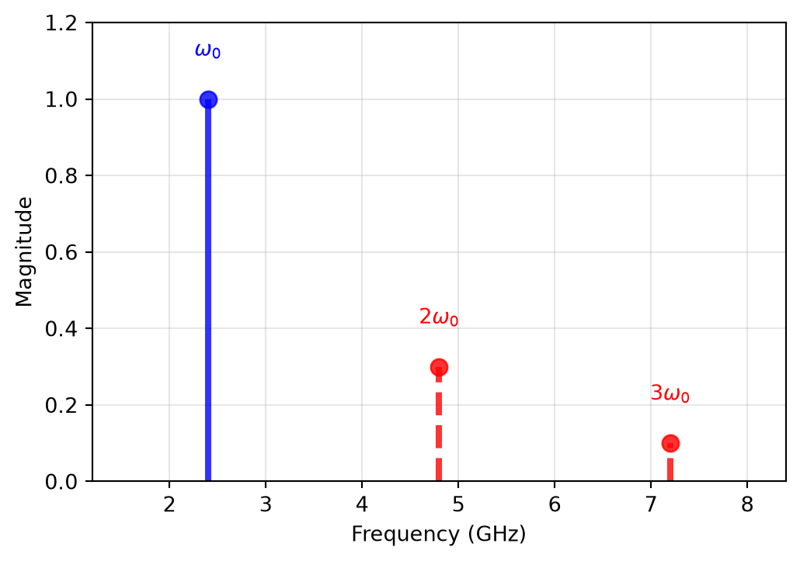
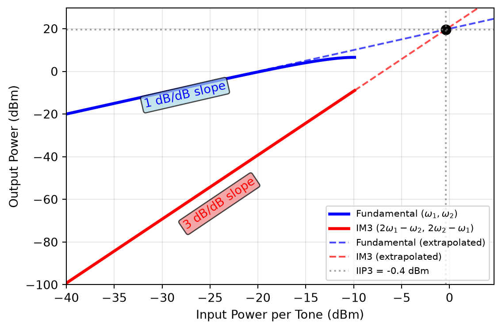
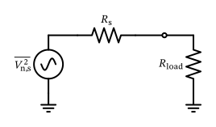
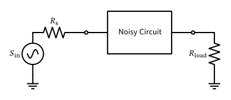
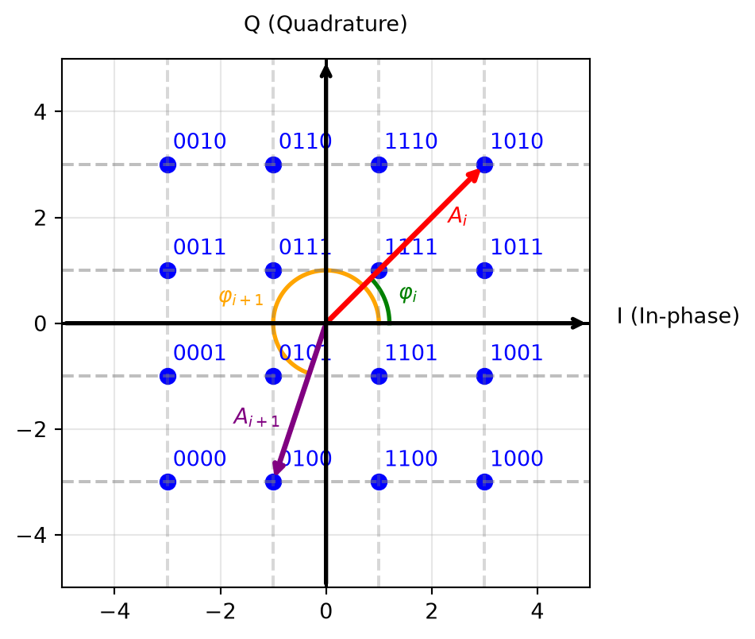

Let us calculate the channel capacity for a system with an RF bandwidth of 2 MHz and an SNR of 7 dB (the BW and minimum SNR of Bluetooth LE for 1 Mbps). First, we need to convert the SNR from dB to linear units:
\[
\text{SNR} = 10^{{7}/{10}} \approx 5
\]
Now we can use Equation 5 to calculate the channel capacity:
This sounds reasonable, as the user data rate for Bluetooth LE is 1 Mbps for the given SNR, which allows for considerable overhead for coding and protocols.
2.2 Linearity
Linearity
Linearity and Memoryless Systems
We use a memoryless (also called “instantaneous”) nonlinear model to simplify the mathematics. A memoryless nonlinear system has the property that the output at time \(t\) only depends on the input at time \(t\).
In contrast, a system with memory will have an output at time \(t\) which depends on the input at time \(t\) and also on past inputs (e.g., at times \(t - \Delta T, t - 2 \Delta T, \ldots, t - N \Delta T\)). Such a system can additionally be time-variant, which means its behavior changes over time, which leads to quite a few very interesting and important phenomena! Examples of systems with memory are filters, which have a frequency-dependent response, or power amplifiers with thermal memory effects.
Even-order nonlinearities (due to \(\alpha_2\) and \(\alpha_4\)) create low-frequency components; they effectively add frequency components stemming from the envelope \(A_0\). If \(A_0\) is a constant then this results in a dc term; if \(A_0(t)\) is time-variant, it will create a squared and quadrupled version of it at low frequencies.
The \(\alpha_1\)-term is the gain of the circuit block.
Odd-order nonlinearities (\(\alpha_3\) and \(\alpha_5\)) can impact the gain of the fundamental term passing through the block. Often \(\alpha_3\) and \(\alpha_5\) have the same sign, which is opposite to the sign of \(\alpha_1\). This implies that the gain stays linear for small input powers. For larger input signals, the terms with \(\alpha_3\) and \(\alpha_5\) start to dominate, leading to gain compression or saturation effects, until the circuit block reaches a level of maximum output power. In some cases, \(\alpha_3\) has the same sign as \(\alpha_1\) but \(\alpha_5\) has the opposite one, which leads to gain expansion: The gain would first demonstrate an overshoot at some input power level, until the term with \(\alpha_5\) becomes dominant and the gain is compressed again.
Even- and odd-order nonlinearities create additional frequency components, so-called harmonics of the fundamental frequency. These harmonics are often unwanted, as they are far outside the wanted transmission frequency range, and need to be minimized, by either
using a lowpass to filter these harmonics, or
increasing the linearity, i.e., making the \(\alpha_2\), \(\alpha_3\), etc., small enough.
Single-Tone Linearity

Figure 5: Single-tone test showing created harmonics at \(2\omega_0\) and \(3\omega_0\).
To keep the following equations readable, we list only the components that are new compared to the single-tone case. The two-tone stimulus of course also produces the plain harmonics of each tone individually (at \(2 \omega_1\), \(2 \omega_2\), \(3 \omega_1\), \(3 \omega_2\)), with exactly the coefficients we already derived in Equation 7. They are omitted below, not missing.
We (again) have the gain compression/expansion effect as already discussed in Section 2.2.1.
In addition, we have cross-modulation, i.e., the squared envelope of one tone (e.g., \(A_2(t)\) of the tone at \(\omega_2\)) impacts the envelope of the other tone at \(\omega_1\). This can lead to unwanted signal distortion, even if there is a large frequency separation between \(\omega_1\) and \(\omega_2\)!
Further, since the sign of \(\alpha_3\) is usually opposite to \(\alpha_1\), this can also lead to desensitization (“desens”). If, for example, \(A_2 \gg A_1\), then there would be no compression due to the tone \(\omega_1\) itself, however, the large tone at \(\omega_2\) will lead to gain compression of the tone at \(\omega_1\); this effect is called desens.
Figure 8: Two-tone test showing fundamental frequencies ω₁, ω₂ and third-order intermodulation products (IM3) at 2ω₁-ω₂ and 2ω₂-ω₁.
Multi-Tone Linearity

Figure 9: Two-tone IM3 test evaluated from the same Taylor model as Figure 6, showing fundamental and IM3 output power vs. input power per tone, and the extrapolated IIP3/OIP3 intercept.
Figure 10: Block cascade for IIP3 calculation showing multiple stages with gains and individual IIP3 values.
Multi-Tone Linearity
Note 4: Simple IIP3 Cascade Calculation
Let’s calculate the overall IIP3 of two cascaded blocks. The first block is a low-noise amplifier with an IIP3 of -10 dBm and a gain of 20 dB. The second block is a mixer that has a gain of 10 dB and an IIP3 of 5 dBm. What is the value of the overall IIP3?
We see that the overall IIP3 is limited by the linearity of the second block, as the first block amplifies all signals (including blockers) by 20 dB before they reach the second block.
Note that the simple approximation given above is only valid for reasonably low frequencies and typical temperatures, and is known as the Rayleigh-Jeans approximation. The full expression of Planck’s blackbody radiation, accounting for quantum effects, is given by (Pozar 2011)
\[
\text{PSD} = \frac{4 R h f}{e^{{h f}/{k T}} - 1}
\]
where \(h\) is the Planck constant (\(h = 6.626 \times 10^{-34}\,\text{J s}\)) and \(f\) is the frequency. The Rayleigh-Jeans approximation is valid for \(f \ll k T / h\), which is approximately 6 THz at room temperature (290 K).
We can integrate the above single-sided PSD over the full frequency range and show that the rms noise voltage of a resistor \(R\) is bounded to
\[
\overline{v_\mathrm{n}^2} = \int_0^\infty \frac{4 R h f}{e^{{h f}/{k T}} - 1} df = \frac{2 (\pi k T)^2}{3 h} \cdot R
\]
which equates to approximately 13 mVrms noise voltage for a 1 k\(\Omega\) resistor at room temperature (which is impossible to measure in practice, as there will be some form of bandwidth limitation in any real measurement setup).
Types of Noise Generation
Equivalence of Shot and Thermal Noise
Note that it has been shown in (Sarpeshkar et al. 1993) that thermal noise and shot noise are actually equivalent, as both are generated by the random, thermally agitated motion of charge carriers!
Types of Noise Generation
A Note on Circuit Noise Calculations
When doing circuit noise calculations, it is instructive to keep the following points in mind:
For circuit calculations involving noise sources, it is convenient to replace the power spectral density by equivalent sinusoidal generators in small bandwidths (typically 1 Hz).
The noise power spectral density in a small bandwidth \(\Delta f\) is given by \(\overline{V_\mathrm{n}^2} = \overline{v_\mathrm{n}^2} / \Delta f\) and \(\overline{I_\mathrm{n}^2} = \overline{i_\mathrm{n}^2} / \Delta f\).
The quantities \(\overline{V_\mathrm{n}^2}\) and \(\overline{I_\mathrm{n}^2}\) can be considered the mean-square value of sinusoidal generators. Using these values, network noise calculations reduce to familiar sinusoidal circuit-analysis calculations using \(V_\mathrm{n}\) and \(I_\mathrm{n}\).
Multiple independent noise sources can be calculated individually at the output, and the total noise in bandwidth \(\Delta f\) is calculated as a mean-square value by adding the individual mean-square contributions from each sinusoid.
2.3.2 Noise in Impedance-Matched Systems
Noise in Impedance-Matched Systems

Figure 11: A noise-matched system with source and load impedances.
Noise in Impedance-Matched Systems
\[
P_\mathrm{n,load} = \frac{\overline{V_\mathrm{n,load}^2}}{R_\mathrm{load}} = \frac{\overline{V_\mathrm{n,s}^2}}{4 R_\mathrm{s}} = k T
\tag{19}\]
\[
\overline{V_\mathrm{n}^2} = 4 k T \Re \{ Z \}
\tag{20}\]
2.3.3 Noise Figure
\[
F = \frac{\text{SNR}_\mathrm{in}}{\text{SNR}_\mathrm{out}} = \frac{(P_\mathrm{s}/P_\mathrm{n})_\mathrm{in}}{(P_\mathrm{s}/P_\mathrm{n})_\mathrm{out}}
\tag{21}\]
Noise Figure
SNR Improvement
Note that the SNR can be improved by filtering, as filtering reduces the noise power. If the noise bandwidth is larger than the signal bandwidth, then the SNR can be improved without affecting the signal. However, this is not considered in the noise factor, as the noise factor assumes that both signal and noise pass through the same bandwidth.
Noise Figure

Figure 12: A noise-matched system with source and load impedances and a noisy circuit block.
Noise Figure
\[
S_\mathrm{out} = G S_\mathrm{in}
\]
\[
N_\mathrm{out} = G N_\mathrm{in} + N_\mathrm{dut}
\] The resulting noise factor can then be calculated as
The overall noise factor \(F_\mathrm{total}\) is always larger than or equal to the noise factor of the first block (\(F_1\)).
The noise factor of the first block is the most important one, as the noise factors of the following blocks are reduced by the gain of all preceding blocks. This is especially important in RF receivers, where the first block is usually a low-noise amplifier (LNA) with a very low noise figure (e.g., 1 dB or less) and a high gain (e.g., 10 dB or more). This ensures that the noise of the following blocks is negligible.
The noise factor of the last block is reduced by the gain of all preceding blocks, so it is usually not very important.
2.3.4 Sensitivity
\[
P_\mathrm{in, min} = P_\mathrm{n} \cdot \text{SNR}_\mathrm{min} \cdot F
\tag{23}\]
Let’s calculate the sensitivity of a Wi-Fi receiver operating at 5 GHz with a noise bandwidth of \(B = 80\,\text{MHz}\), a noise figure of \(\text{NF} = 7\,\text{dB}\), and a minimum detectable SNR of 25 dB. This high SNR means that a high-order modulation scheme (like 64-QAM) is used for high data rates.
This means that the minimum input signal power that can be detected by the Wi-Fi receiver is approximately -63 dBm.
2.4 Modulation
Modulation
\[
s(t) = A \cos(\omega_0 t + \varphi)
\]
Modulation
Amplitude \(A(t)\) (amplitude modulation, AM; the digital form is called amplitude-shift keying, ASK)
Frequency \(\omega_0(t)\) (frequency modulation, FM; the digital form is called frequency-shift keying, FSK)
Phase \(\varphi(t)\) (phase modulation, PM; the digital form is called phase-shift keying, PSK)
Amplitude \(A(t)\) and phase \(\varphi(t)\) (quadrature amplitude modulation, QAM)
Modulation

Figure 14: 16-QAM constellation diagram with Gray code labeling of constellation points.
Modulation
Table 3: Required symbol-energy-to-noise ratio \(E_\mathrm{s}/N_0\) and bit-energy-to-noise ratio \(E_\mathrm{b}/N_0\) for Gray-coded modulation schemes to achieve BER = \(10^{-5}\) in an AWGN channel w/o error correction
With the overhead for control channels and error correction coding a user data rate of approximately 100 Mbps can be achieved in a 20 MHz LTE channel. This data rate can be scaled up in two independent ways: carrier aggregation combines several such 20 MHz channels into one logical link, while MIMO transmits multiple spatial layers within the same 20 MHz channel using several antennas. The two multiply, which is how modern devices reach gigabit rates.
2.7 Multiple Access Techniques
Multiple Access Techniques
Time division multiple access (TDMA): Users are assigned specific time slots for transmission, allowing multiple users to share the same frequency channel by dividing continuous time into slots.
Frequency division multiple access (FDMA): Users are assigned specific frequency bands within the overall frequency spectrum, allowing multiple users to transmit simultaneously on different frequencies.
Code division multiple access (CDMA): Users are assigned unique spreading codes, allowing them to transmit simultaneously over the same frequency band. The receiver uses the same code to extract the desired signal. This scheme is more precisely called direct-sequence CDMA (DS-CDMA). A sibling technique from the same spread-spectrum family (not a variant of DS-CDMA) is frequency-hopping spread spectrum (FHSS), where the carrier frequency is changed rapidly according to a pseudo-random sequence known to both the transmitter and receiver; users are separated by their hopping patterns rather than by a spreading code. This is used in Bluetooth, and has originally been co-invented by the Austrian actress Hedy Lamarr.
Orthogonal frequency division multiple access (OFDMA): A variant of OFDM, where multiple users are assigned different subcarriers for transmission, allowing for efficient use of the frequency spectrum. This is used in 4G LTE and 5G NR.
Spatial division multiple access (SDMA): Uses multiple antennas to create spatially separated channels, allowing multiple users to transmit simultaneously in the same frequency band.
2.8 Modulation and Coding Schemes
Modulation and Coding Schemes
Exemplary MCS in Wi-Fi
Some operating systems and wireless drivers show the MCS (and other parameters of the Wi-Fi link) during use. A typical output might be:
MCS: 7
RSSI: -53 dBm
Interference: -92 dBm
Bandwidth: 160 MHz
Looking up MCS 7 in the Wi-Fi MCS table linked above shows that this corresponds to 64-QAM with a coding rate of 5/6. With a bandwidth of 160 MHz, 2x MIMO and a guard interval (GI) of 0.8 µs, the maximum data rate is a whopping 1441 Mbps.
References
Gray, Paul R., Paul J. Hurst, Stephen H. Lewis, and Robert G. Meyer. 2009. Analysis and Design of Analog Integrated Circuits. Fifth. Wiley.
Küpfmüller, Karl. 1949. Die Systemtheorie Der Elektrischen Nachrichtenübertragung. S. Hirzel Verlag.
Molisch, Andreas F. 2022. Wireless Communications: From Fundamentals to Beyond 5G. 3rd edition. Wiley-IEEE Press.
Pozar, David M. 2011. Microwave Engineering. 4th edition. Wiley.
Razavi, Behzad. 2017. Design of Analog CMOS Integrated Circuits. McGraw-Hill.
Saleh, A A M. 1981. “Frequency-Independent and Frequency-Dependent Nonlinear Models of TWT Amplifiers.”IEEE Transactions on Communications 29 (11): 1715–20. https://doi.org/10.1109/tcom.1981.1094911.
Sarpeshkar, R., T. Delbruck, and C. A. Mead. 1993. “White noise in MOS transistors and resistors.”IEEE Circuits and Devices Magazine 9 (6): 23–29. https://doi.org/10.1109/101.261888.
Sklar, Bernard, and Fredric J. Harris. 2020. Digital Communications: Fundamentals and Applications. 3rd edition. Pearson.